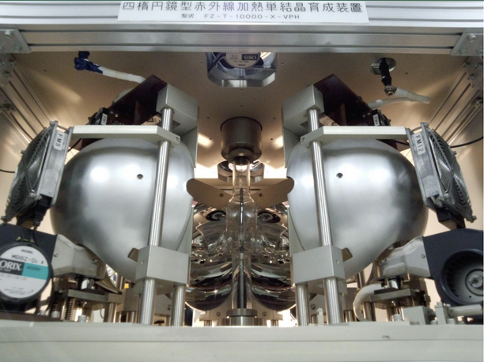
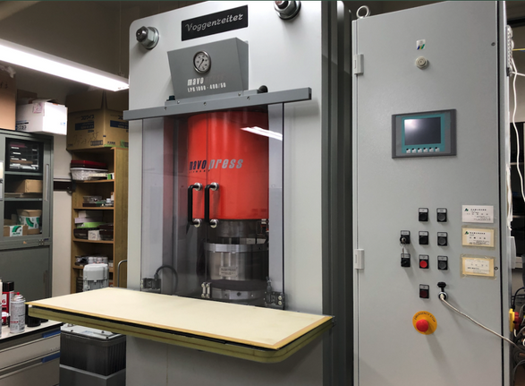

伊賀研究室では，物質開発とその磁性を中心とする種々の物性探索を主たるテーマとして研究をしています．
純良単結晶育成

希土類ホウ化物の純良単結晶を光集中加熱炉で溶媒移動浮遊帯域溶融法(TSFZ法)により育成して，その物性研究をしています．
次世代の高速デバイスとして期待されるトポロジカル近藤絶縁体 SmB6 と YbB12 の大型純良単結晶のバルクの磁性や伝導，熱物性に加えて近年注目されている表面物性などを測定して強相関電子状態の解明を進めています．
近年磁場下で金属でしか示しえない量子振動が絶縁体の YbB12 の電気抵抗の磁場依存性で見つかり，その発生機構が世界的に注目を集めています．
次世代の高速デバイスとして期待されるトポロジカル近藤絶縁体 SmB6 と YbB12 の大型純良単結晶のバルクの磁性や伝導，熱物性に加えて近年注目されている表面物性などを測定して強相関電子状態の解明を進めています．
近年磁場下で金属でしか示しえない量子振動が絶縁体の YbB12 の電気抵抗の磁場依存性で見つかり，その発生機構が世界的に注目を集めています．
高圧合成

常圧では作製できない物質は高圧環境下では作製可能な場合があります．地球深部，地下600kmでは圧力は25万気圧にも達しますが，そのような環境を再現し新規化合物を開発を目指す装置が左の画像(Mavo-Press)です．
高圧合成によってこれまで未作製の GdB12 や SmB12などの新しい希土類ホウ化物の合成に成功してきました．
現在はさらに軽希土類のホウ化物や新しい有機化合物の高圧合成にも挑戦中で，新機能性材料開発と物性評価を進めています．
高圧合成によってこれまで未作製の GdB12 や SmB12などの新しい希土類ホウ化物の合成に成功してきました．
現在はさらに軽希土類のホウ化物や新しい有機化合物の高圧合成にも挑戦中で，新機能性材料開発と物性評価を進めています．